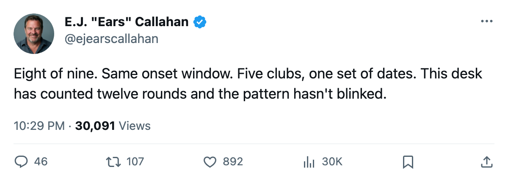
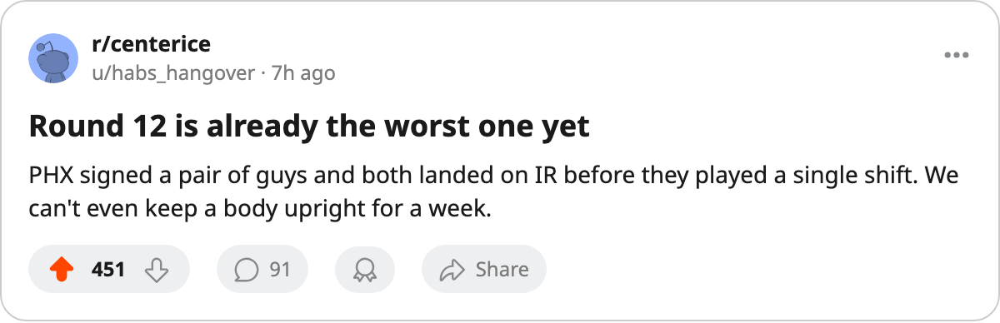

Sign-and-Injure, Round 12: 8 of 9 Hit IR in the Same 3-Day Window
Nine contracts filed Dec 5 and Dec 6. Eight on the injured list with identical onset dates. The ninth man hasn't gone down yet, and nobody believes he will for long.
 E.J. "Ears" CallahanInsider · The Hot Stove
E.J. "Ears" CallahanInsider · The Hot Stove
8 of 9 signings hit IR in the same 3-day onset window. Five clubs. One set of dates.

Nine contracts hit the league office on Dec 5 and Dec 6. Eight of the nine men are on the injured list today, and the league places every onset between Dec 8 and Dec 11. The one who hasn't landed there is Niclas Wallin, signed by  Buffalo Sabres for $74,560. He is the only name in the batch without a body part attached to it.
Buffalo Sabres for $74,560. He is the only name in the batch without a body part attached to it.
This is the twelfth filing-day window this desk has tracked. The pattern from Round 11 holds: cheap contracts, immediate bodies, one onset window that swallows the group. Round 11 had 4 onsets in 2 days from 5 contracts. This round has 8 onsets in 3 days from 9 contracts. The ratio moved in the wrong direction, which is the only direction it has ever moved.
| player | club | overall | salary | injury | return |
|---|---|---|---|---|---|
 Theoren Fleury86 Theoren Fleury86 |  Chicago Blackhawks Chicago Blackhawks | 82 | $43,870 | foot | 2005-12-15 |
 Drake Berehowsky78 Drake Berehowsky78 |  Phoenix Coyotes Phoenix Coyotes | 78 | $90,590 | arm | 2006-02-13 |
 Scott Hartnell83 Scott Hartnell83 | Buffalo Sabres | 79 | $206,500 | groin | 2006-01-07 |
| Patrick Boileau66 |  Mighty Ducks of Anaheim Mighty Ducks of Anaheim | 70 | $254,230 | neck | 2006-01-21 |
 Rob Niedermayer70 Rob Niedermayer70 | Mighty Ducks of Anaheim | 74 | $420,790 | concussion | 2005-12-15 |
 Miroslav Satan77 Miroslav Satan77 | Buffalo Sabres | 73 | $462,410 | ankle | 2005-12-25 |
 Ladislav Nagy85 Ladislav Nagy85 | Phoenix Coyotes | 85 | $494,890 | abdomen | 2005-12-12 |
 Jeff Halpern77 Jeff Halpern77 |  Tampa Bay Lightning Tampa Bay Lightning | 74 | $629,740 | abdomen | 2006-01-13 |
| Niclas Wallin | Buffalo Sabres | — | $74,560 | not on IR | — |
The cheapest deal goes down first
Theoren Fleury signed for $43,870 at Chicago Blackhawks on Dec 6. He carries an 82 overall, second-highest in the batch, and he went on IR with a foot, return Dec 15. The league dates his onset no earlier than Dec 8. Two days between paper and body.
Phoenix and Anaheim go perfect
Phoenix Coyotes filed 2 contracts on Dec 5. Both players are on IR. Drake Berehowsky, $90,590, 78 overall, has an arm injury out to Feb 13. Ladislav Nagy, $494,890, 85 overall, carries the highest rating in the group and the second-shortest return: an abdomen, out through Dec 12. Phoenix Coyotes is 7-17-2, 22 points, last in the Pacific, with 6 men on IR. Two of them arrived this week.
Mighty Ducks of Anaheim went 2-for-2. Rob Niedermayer, $420,790, 74 overall, concussion, return Dec 15. Patrick Boileau, $254,230, 70 overall, neck, out to Jan 21.
Buffalo's third man still has his jersey on
Buffalo Sabres filed 3 on Dec 5. Miroslav Satan, $462,410, 73 overall, ankle, return Dec 25. Scott Hartnell, $206,500, 79 overall, groin, return Jan 7. Wallin is the one who hasn't gone down. Give it until the next filing.
Tampa Bay Lightning signed Jeff Halpern for $629,740, the largest salary in the batch. An abdomen, out to Jan 13.
Nine players, five clubs, one set of dates
The onset windows are identical: Dec 8 to Dec 11 across all eight. The filings were Dec 5 and Dec 6. Nine players, five clubs, one window. The league's own injury report groups them as though the same threshold caught every one of them.
Nagy's return date is Dec 12. If he clears, Phoenix Coyotes has their best new signing back before this desk can file the next round. If he doesn't, the streak keeps going.

